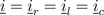
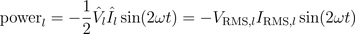

The Modelica.Electrical.QuasiStationary library addresses the analysis of electrical circuits with purely sinusoidal voltages and currents. The main characteristics of the library are:
omega of the voltages and currents of
a circuit are determined from a reference angle gamma by means of
omega = der(gamma).gamma is not a global quantity
since it propagated through the connector.
Therefore, independent circuits of different frequencies can be modeled in one model.The main intention of this library is the modeling of quasi stationary behavior of single and multi phase AC circuits with fixed and variable frequency. Quasi stationary theory and applications can be found in [Dorf1993], [Burton1994], [Landolt1936], [Philippow1967], [Weyh1967], [Vaske1973].
A general electrical circuit can be a DC circuit, an AC circuit with periodic sinusoidal or non-sinusoidal voltages and currents or a transient circuit without particular waveform of voltages and currents. Therefore a coupling model between a quasi stationary circuit and a general (transient) electrical circuit has to be designed carefully taking the specific application into account. As an example, you may look at the ideal AC DC converter, which is used in the rectifier example.
Extends from Modelica.Icons.Information (Icon for general information packages).
| Name | Description |
|---|---|
ACCircuit | AC circuit |
Introduction | Introduction to phasors |
Power | Real and reactive power |
ReferenceSystem | Reference system |
The purely sinusoidal voltage
in the time domain can be represented by a complex rms phasor

For these quasi stationary phasor the following relationship applies:

This equation is also illustrated in Fig. 1.

|
From the above equation it is obvious that for t = 0 the time domain voltage is v = cos(φv). The complex representation of the phasor corresponds with this instance, too, since the phasor is leading the real axis by the angle φv.
The explanation given for sinusoidal voltages can certainly also be applied to sinusoidal currents.
Extends from Modelica.Icons.Information (Icon for general information packages).
A simple example of a series connection of a resistor, an inductor and a capacitor as depicted in Fig. 1 should be explained in the following. For various frequencies, the voltage drops across the resistor, the inductor and the capacitor should be determined.

|
The voltage drop across the resistor

and the inductor

and the capacitor

add up to the total voltage

as illustrated in the phasor diagram of Fig. 2.

|
Due to the series connection of the resistor, inductor and capacitor, the three currents are all equal:

Extends from Modelica.Icons.Information (Icon for general information packages).
For periodic waveforms, the average value of the instantaneous power is real power P. Reactive power Q is a term associated with inductors and capacitors. For pure inductors and capacitors, real power is equal to zero. Yet, there is instantaneous power exchanged with connecting network.
The series resonance circuit which was also addressed in the AC circuit will be investigated.The instantaneous voltage and current are in phase:


Therefore, the instantaneous power is

A graphical representation of these equations is depicted in Fig. 1

|
Real power of the resistor is the average of instantaneous power:

The instantaneous voltage leads the current by a quarter of the period:


Therefore, the instantaneous power is

A graphical representation of these equations is depicted in Fig. 2

|
Reactive power of the inductor is:

The instantaneous voltage lags the current by a quarter of the period:


Therefore, the instantaneous power is

A graphical representation of these equations is depicted in Fig. 3

|
Reactive power of the capacitor is:

For an arbitrary component with two pins, real and reactive power can be determined by the complex phasors:

In this equation * represents the conjugate complex operator
Extends from Modelica.Icons.Information (Icon for general information packages).
The reference angle gamma:
omega of the voltages and currents
of a circuit by means of omega = der(gamma).Designing new components, the guidelines of the Modelica Specification dealing with Overconstrained Equation Operators for Connection Graphs have to be taken into account.
Extends from Modelica.Icons.Information (Icon for general information packages).
Generated 2018-10-03 12:37:09 EDT by MapleSim.